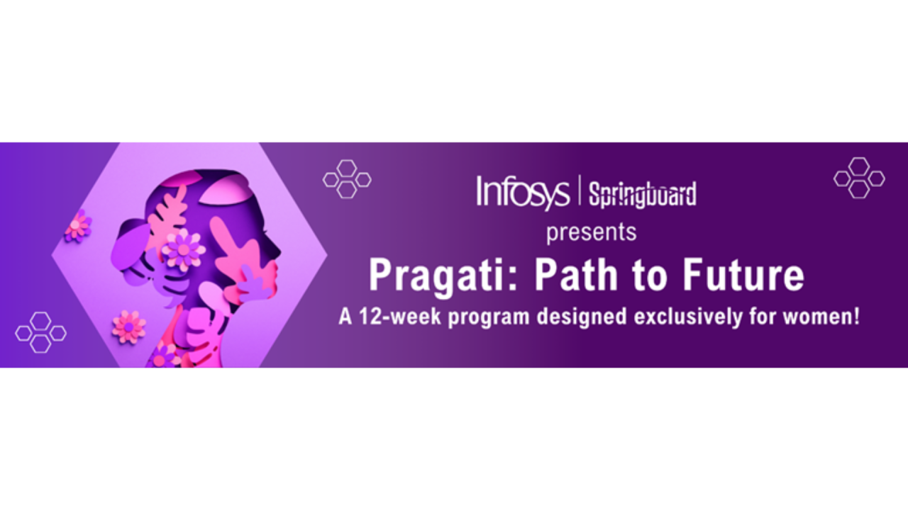

Blog

Smart India Hackathon
I had the opportunity to participate in the prestigious Smart India Hackathon, where our team collaboratively proposed and built a Geolocation-based Attendance Tracking App aimed at streamlining employee attendance processes across multiple office locations. The application was designed with practical, user-centric features such as: Geolocation-based check-in/check-out Offline access to mark attendance in areas with poor connectivity Multilingual support to cater to diverse users Integration with Google Maps API for accurate location tracking Real-time data synchronization with a cloud database This hackathon was a remarkable team effort, allowing us to collaboratively brainstorm, design, and develop the solution within a limited time frame. Through this, I gained extensive hands-on experience in: Flutter for building a cross-platform mobile app MongoDB Atlas for managing cloud-based, scalable data storage Google Maps & GPS services for location tracking Git and GitHub for version control and effective collaboration The event not only sharpened my technical skills but also helped enhance my teamwork, problem-solving, and agile development practices. It was a valuable learning experience in working under deadlines, efficiently distributing tasks, and collectively overcoming challenges.
Rajya Puraskar - Scouts and Guides
Achieving the Rajya Puraskar, one of the highest state-level honors in Scouts and Guides, marked a significant milestone in my personal growth journey. Through this experience, I actively participated in state-level camps, service activities, and rigorous evaluations, which strengthened my: Leadership skills by leading teams in various outdoor tasks and social initiatives Teamwork and collaboration during group challenges and community service projects Sense of social responsibility through volunteering and public service activities This experience taught me to adapt, communicate effectively, and lead with empathy — lessons that continue to guide me in both personal and professional settings.

Java SpringBoard - Pragathi: Path to Future
As part of the Infosys Springboard initiative, I had the opportunity to enhance my skills in Java programming, Spring Boot framework, and full-stack development through a series of hands-on projects, coding exercises, and interactive learning modules. This program provided an in-depth understanding of building scalable web applications using Java 17, Spring Boot RESTful services, MySQL, and front-end integration tools. Alongside full-stack development, I also explored the exciting domain of Artificial Intelligence (AI) and Machine Learning (ML) using Python. The AI/ML modules covered key concepts such as: Supervised and Unsupervised Learning Data Preprocessing and Cleaning Model Building and Evaluation Techniques Libraries like Pandas, NumPy, Matplotlib, and scikit-learn Basic implementations of algorithms like Linear Regression, Decision Trees, and K-Means Clustering Through practical assignments and projects, I gained valuable experience in applying AI/ML techniques to real-world datasets, performing predictive analysis, data visualization, and model optimization. This dual exposure to full-stack application development and AI/ML fundamentals has equipped me with a versatile technical skill set, enhancing both my backend development capabilities and data-driven problem-solving approach. The program also emphasized professional development skills such as project management, version control with Git/GitHub, agile methodologies, and effective team collaboration in a simulated professional environment.
.jpg)
Infosys Springboard Internship
As a Springboard Intern, I gained valuable exposure to real-world software development practices through a structured Java Stack Development program. The internship allowed me to deepen my understanding of Java programming, Spring Boot framework, REST APIs, and MySQL database management. I also got hands-on experience with collaborative development tools like Git and GitHub, enhancing my ability to work efficiently in team-based projects. One of the highlights of my internship was developing a Hospital Management Application named "Care and Cure App". This project provided a comprehensive, practical learning experience in: Back-end logic development using Java and Spring Boot Database design and management with MySQL Front-end integration techniques for seamless user interaction Version control and team collaboration using GitHub Working alongside students from different states helped me enhance my communication, teamwork, and cross-functional collaboration skills. Within the project, I specifically handled the Doctor Module, where I implemented functionalities such as: Doctor registration and profile management Appointment scheduling and patient records Availability management and slot booking This hands-on project not only improved my problem-solving skills but also gave me real-time exposure to the end-to-end software development lifecycle, from database schema creation to API development and front-end integration. The internship experience broadened my technical capabilities and taught me the importance of teamwork, agile development, and attention to detail in delivering quality software solutions.